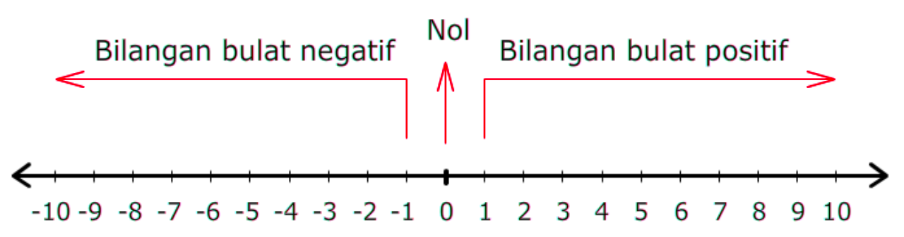

BILANGAN BULAT POSITIF DAN NEGATIF
Dalam pelajaran Matematika, kamu pasti udah nggak asing lagi dengan istilah bilangan kan? Bilangan adalah suatu konsep matematika yang memberikan nilai jumlah terhadap sesuatu yang dihitung. Hal ini yang membuat bilangan digunakan dalam pengukuran dan pencacahan.Nah, suatu bilangan punya yang namanya simbol atau lambang. Simbol ini, kita sebut sebagai angka.
Bilangan itu banyak sekali macamnya. Ada bilangan bulat, rasional, irasional, bulat, pecahan, cacah, asli, dan masih banyak lagi, ya.
Nah, di artikel kali ini, akan membahas mengenai bilangan bulat. Seperti apa sih bilangan bulat itu? Bagaimana ya cara membandingkan dan mengurutkan bilangan bulat? Yuk, kita cari tau sama-sama jawabannya lewat artikel ini!
Pengertian Bilangan Bulat
Bilangan bulat adalah sistem bilangan yang merupakan himpunan dari semua bilangan bukan pecahan. Bilangan bulat terdiri dari tiga susunan yaitu bilangan bulat positif, angka nol, dan bilangan bulat negatif. Himpunan bilangan bulat dilambangkan dengan simbol Z yang berarti bilangan bulat.
Jenis-Jenis Bilangan Bulat
Bilangan bulat terdiri dari bilangan positif, nol, dan bilangan bulat negatif. Kita bahas satu persatu yaa.
1. Bilangan Cacah
Bilangan cacah adalah himpunan bilangan yang terdiri dari bilangan nol dan bilangan bulat positif. Bilangan cacah juga sering disebut dengan bilangan bulat yang bukan negatif. Jadi, bilangan cacah itu isinya positif semua. Lambang bilangan cacah adalah W yang memiliki kepanjangan Whole Numbers, yang artinya himpunan bilangan cacah. Contoh bilangan cacah, antara lain 0, 1, 2, 3, 4, 5, 6, 7, 8, 9, 10, …, dst..
2. Bilangan Bulat Positif
Bilangan bulat positif adalah kumpulan bilangan bulat yang bernilai positif. Bilangan bulat positif pada garis bilangan terletak di sebelah kanan angka nol. B = {1, 2, 3, ...}.
3. Nol
Bilangan bulat dapat dilakukan berbagai operasi, seperti penjumlahan, pengurangan, perkalian, dan pembagian. Contohnya, hasil dari penjumlahan -3 dan 5 adalah 2.
4.Bilangan Bulat Negatif
Bilangan bulat negative adalah Kumpulan bilangan bulat yang bernilai negative. Pada garis bilangan bilangan bulat terletak di sebelah kiri angka nol.
Cara Membandingkan Bilangan Bulat
Membandingkan bilangan bulat, berarti menentukan apakah suatu bilangan bulat memiliki nilai lebih besar, lebih kecil, atau sama dengan bilangan bulat yang lain. Dalam membandingkan bilangan bulat, kita bisa menuliskannya menggunakan lambang-lambang berikut ini:
Misalkan, p dan q merupakan bilangan bulat.
- Jika a lebih besar dari b, maka bisa ditulis a > b
- Jika a lebih kecil dari b, maka bisa ditulis a < b
- Jika a sama dengan b, maka bisa ditulis a = b
Cara Mengurutkan Bulat
Mengurutkan bilangan bulat, berarti menuliskan bilangan bulat tersebut secara urut dari nilai terkecil ke nilai terbesar atau sebaliknya. Pada garis bilangan, semakin ke kanan letak suatu bilangan, maka nilainya akan semakin besar. Sebaliknya, semakin ke kiri letak suatu bilangan, nilainya akan semakin kecil.
Supaya kamu lebih paham yuk cermati gambar berikut ini:
Pada bilangan bulat positif, semakin besar bilangannya, semakin besar juga nilainya. Sementara itu, pada bilangan bulat negatif, semakin besar bilangannya, semakin kecil nilainya.
Nah, supaya semakin paham, kamu bisa menonton vidio pembelajaran berikut ini yaa
Video Pembelajaran
Geogebra
Supaya kamu semakin paham kamu bisa mencermati geogebra di bawah ini yaa